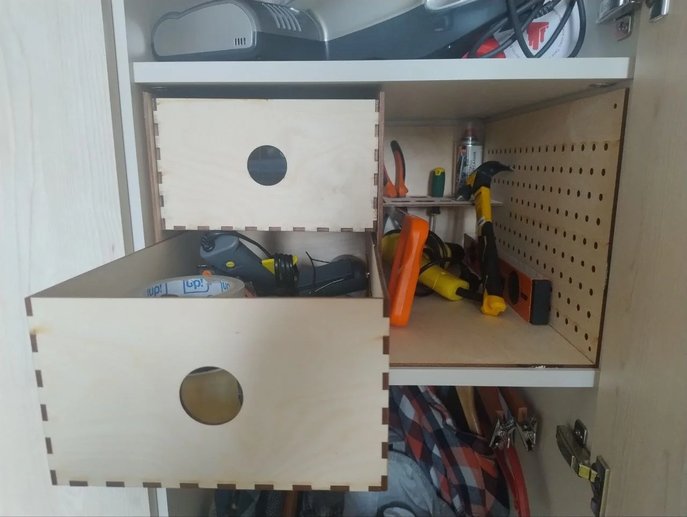
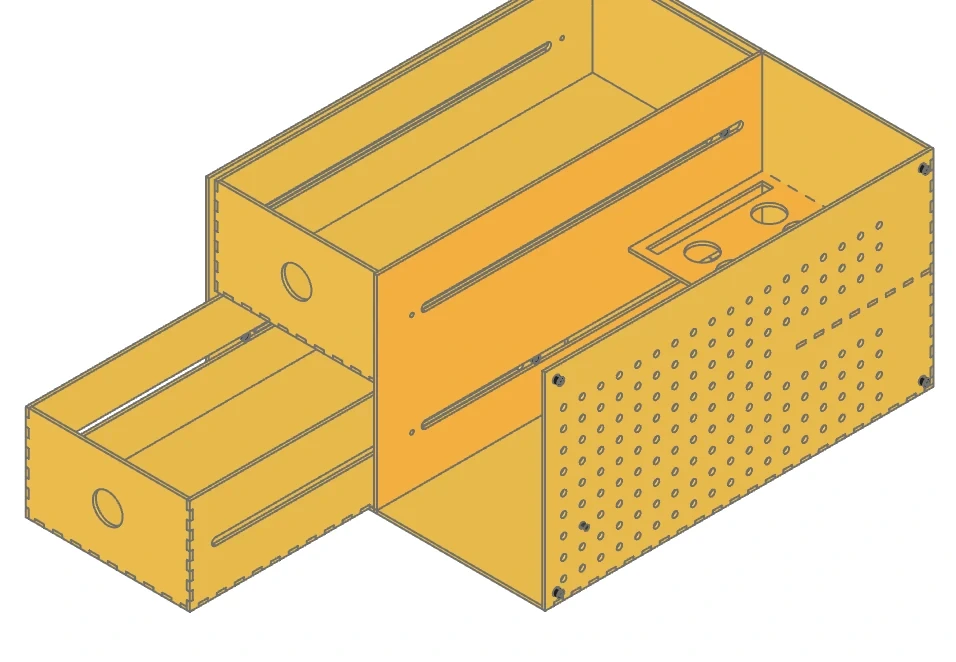
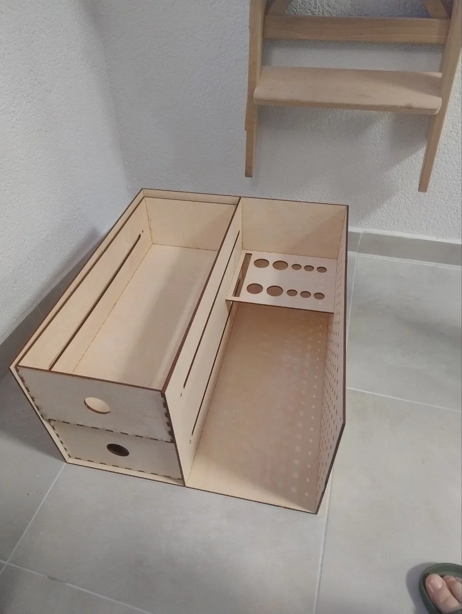

Storing tools in the closet was inconvenient, so I decided to make a custom organizer.
Standard plastic storage bins don’t work well on a 50+ cm deep shelf: either they are too small and waste half the space, or everything ends up in a jumbled pile. I wanted an organizer built to the exact shelf dimensions (467 × 525 × 280 mm), so every tool has its spot and is within immediate reach.
To make it, I designed a modular birch plywood organizer combining code-based parametric CAD (Python + CadQuery), precision laser cutting, and 3D-printed PETG parts.
- Project Repository: rrader/cad-projects/laser_box
- Material: 4 mm (or 6 mm) Baltic birch plywood, laser-cut with kerf compensation (
kerf = 0.2 mm). - Hybrid Hardware: 3D-printed drawer guide cylinders, pegboard wall standoffs, and custom J-hooks.

1. Layout & Internal Architecture
The organizer is split down the middle by a vertical structural divider into two distinct functional zones:
-
Left Bay (Two Slide-Out Drawers):
- Deep Bottom Drawer: Houses bulkier and heavier gear — hot glue gun, reinforced tape rolls, soldering equipment, and hardware fasteners.
- Top Drawer: Dedicated to smaller hand tools, multimeter, measuring tapes, and consumables.
- Finger-Pull Holes: Rather than protruding hardware handles that could hit the closet door, clean circular finger-pull holes are cut directly into the front panels.
- Hardware-Free Slides: Traditional ball-bearing slides would waste 25–30 mm of internal width. Instead, horizontal guide channels are laser-cut directly into the drawer side panels, sliding over 3D-printed cylindrical guide pins (
rail_cylinder.stl). It doesn’t glide with buttery smoothness and can catch a bit, but it works and gets the job done without losing drawer width.
-
Right Bay (Open Quick-Access Tool Compartment):
- Tall Open Niche: Holds tall vertical tools without opening drawers — hammer, torpedo level, quick-clamps, and lubricant/WD-40 spray cans.
- Integrated Tool Rack: A floating shelf near the upper rear features precision slots and circular cutouts of varying diameters to hold screwdrivers, pliers, wire strippers, and utility knives upright.
- Built-in Pegboard Wall: The right exterior panel features an integrated 7×7 mm square/round hole matrix on a 25 mm pitch.
- Wall Standoffs (
pegboard_spacer.stl): Four 6 mm cylindrical spacers on the outside of the right wall offset the cabinet slightly from the closet interior, providing the clearance needed to insert and remove 3D-printed pegboard hooks (pegboard_hook.stl).

2. Parametric CAD in Code: CadQuery & Python
Instead of drawing individual static parts in GUI-based CAD software (where changing plywood thickness from 4 mm to 6 mm would require manually adjusting hundreds of finger joints and slot widths), the entire model is written procedurally in Python using CadQuery and cq-warehouse (makeFingerJoints).
All primary dimensions and fit tolerances are isolated in a single configuration file, params.py:
| Parameter | Value | Functional Purpose |
|---|---|---|
SHELF_W, SHELF_D, SHELF_H |
467 × 525 × 280 mm | Measured clear opening of the closet shelf |
T |
4.0 mm | Plywood stock thickness |
KERF |
0.20 mm | Laser cut width compensation (tight joint friction) |
BOX_GAP |
2.0 mm | Outer installation clearance from cabinet walls |
SPACER_DEPTH |
6.0 mm | Standoff offset for pegboard hook clearance |
DRAWER_GAP |
0.8 mm | Horizontal clearance per drawer side for smooth sliding |
DRAWER_V_GAP |
5.0 mm | Vertical clearance above each drawer |
PBOARD_GRID |
25.0 mm | Pegboard hole matrix spacing (7.0 mm hole diameter) |
Algorithmic Highlights
- Finger Joint Generation: Finger width defaults to
3 × T(~12–18 mm). The algorithm calculates an odd number of interlocking tabs per edge, automatically offsetting alternating faces to prevent tab collisions at corners. - Dynamic Shelf Height (
_compute_shelf_z): The height of the tool rack is dynamically computed so that its mounting tabs in the central divider maintain at least 1.5 mm clearance from nearby finger joints, eliminating paper-thin bridges that could burn through during laser cutting.
3. CNC Laser Cutting, Kerf & Sheet Nesting
Manufacturing interlocking plywood assemblies on a laser cutter involves several critical details:
- Kerf Offset: The laser beam vaporizes roughly 0.15–0.20 mm of wood. Without software compensation, finger joints fit loosely and require excessive glue. With
KERF = 0.20 mm, tabs mate with a satisfying friction fit under gentle mallet taps. - Automated Nesting (MAXRECTS Bin Packing): The export script
export.pyflattens all 3D faces into 2D profiles and packs them onto a 1500 × 1500 mm sheet using a Maximal Rectangles Best Area Fit algorithm, while respecting plywood grain direction (grain_lock) for structural panels. - Coincident-Edge Protection: When an interior slot touches the outer boundary of a panel, it is merged into a continuous U-shaped notch (
_notch_outer_edge). This prevents the laser from cutting the same line twice and charring the edges.

4. Assembly & Real-World Use
The frame was glued together using standard D3 PVA wood glue.
In everyday use, the unit completely transforms the closet shelf:
- Full utilization of the 52 cm cabinet depth.
- High-frequency tools (hammer, level, screwdrivers, pliers) are instantly accessible in the right bay without pulling out any drawers.
- The bottom drawer holds bulkier tools, while the top drawer stores small precision items and consumables. Everything fits, and day-to-day access is quick and practical.